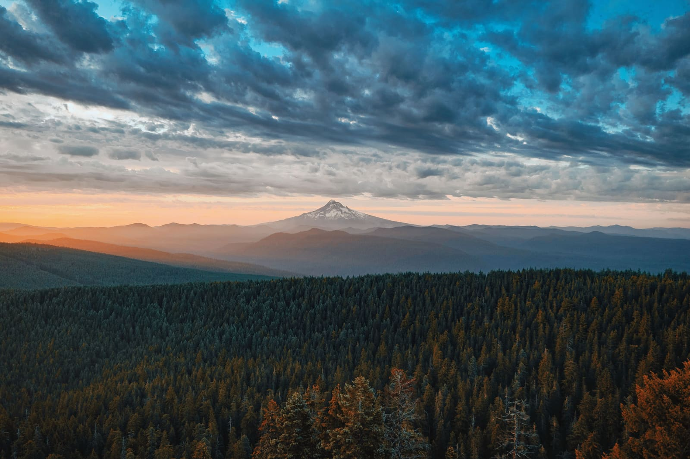

In person
There is seating inside. The worship service starts at 10:30 am, with Sunday School at 9:30 am (September – early June). In summer, worship starts at 9:30 am.
Get directions →
Non-denominational · Near Molalla, Oregon
“I was glad when they said unto me, Let us go into the house of the LORD.”
Sundays & Thursdays
The service is also broadcast on 96.7 FM for listening from your car in the parking lot, and streamed live on YouTube.
Three ways to join
There is seating inside. The worship service starts at 10:30 am, with Sunday School at 9:30 am (September – early June). In summer, worship starts at 9:30 am.
Get directions →Our short-range radio broadcast lets you listen to the service from your car, parked outside the church.
96.7 FM
Watch live, or catch a past service, on our YouTube channel.
Watch live or catch a past service →Plan your visit
Here’s what to wear, how long the service runs, and what happens on a Sunday morning.
Plan your visitLatest service
Watching on a TV? Open the service in the YouTube app on your Chromecast, Roku, or Apple TV.